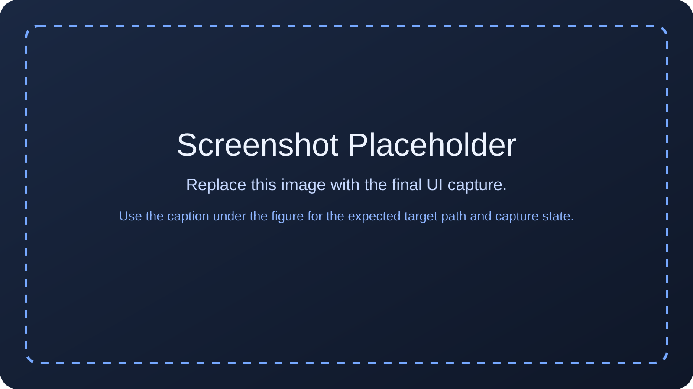

Measure Workflow¶
The Measure tab converts each loaded TIFF image into per-image metrics that can be inspected directly or reused by analysis plugins. This is where thresholding, average-mode selection, ROI-based measurement, optional background subtraction, normalization, and preview validation are brought into one workflow. A useful mental model is:
If the measurement state is wrong on this page, later plots can still look mathematically clean while being physically misleading.
What this page is for¶
Use Measure when you need to answer questions such as:
- how many saturated pixels does each image contain?
- what intensity value best represents each image for the current study?
- how does that value change when restricted to a fixed spatial region?
- how do the results change after background subtraction?
- are the numbers in the table consistent with what is visible in the preview and histogram?
Recommended sequence¶
A reliable operating sequence is:
- Confirm the dataset and metadata source in Data.
- Set the saturation threshold.
- Choose the average mode.
- If using Top-K Mean, choose
Kand apply it. - If using ROI Mean, draw or load the ROI, then apply it to all images.
- Enable background subtraction only if the comparison requires it.
- Decide intentionally whether normalization should be on or off.
- Review the table, preview, and histogram together before moving to Analyze.
Metrics Setup¶
The Metrics Setup group determines how the app computes per-image values.
| Control | What it does | Engineering meaning |
|---|---|---|
| Saturation Threshold (>=) | Sets the pixel value counted as saturated. | Defines the clipping criterion used for sat_count. The count is evaluated on the current metric image. |
| Apply Threshold | Recomputes threshold-dependent counts. | Use it after changing the threshold. This does not invent a new measurement mode; it updates the threshold-based view of the current metric image. |
| Average Mode | Chooses how the representative intensity is computed. | This decision controls which mean/std/SEM values exist and therefore which downstream analysis quantities can be built. |
| Top-K Count | Sets how many brightest pixels are used in Top-K mode. | Visible only in Top-K Mean mode. |
| Apply Top-K Count | Recomputes metrics using the current K. |
Use it after changing K. |
| Display Rounding | Changes only the displayed precision of mean/std/SEM values. | Formatting only; stored values are unchanged. |
| Normalize Intensity (0-1) | Rescales intensity-like values relative to the current dataset maximum pixel value. | Useful for within-dataset comparison, but it changes the meaning of displayed and downstream intensity-derived values from raw counts to dataset-relative values. |
Choosing the average mode¶
Disabled¶
No average-based metric is computed. Use this mode when you only care about:
- saturated-pixel counts
- peak-value inspection
- preview and histogram validation
Top-K Mean¶
The app selects the K brightest pixels in each metric image and computes statistics only on that subset. Use Top-K Mean when:
- you want a bright-region proxy without drawing a fixed spatial mask
- the brightest feature may shift slightly between images
- the signal is spatially compact and you want the metric to follow the brightest structure automatically
Be careful when:
- hot pixels or isolated artifacts may enter the brightest set
- saturation is present, because the metric can become dominated by clipped values
Kchanges between studies, because that changes the physical meaning of the reported mean
ROI Mean¶
The app computes statistics only inside the current ROI rectangle. Use ROI Mean when:
- the same physical region must be compared across images
- spatial consistency matters more than automatic bright-pixel selection
- surrounding structure should be excluded explicitly
When ROI Mean is selected:
- ROI tools become visible
- the preview supports drawing and moving the ROI
- Apply ROI to All Images becomes the batch-computation path for ROI statistics
How to choose K¶
K is not just a UI parameter. It defines the pixel population used to build the Top-K statistics. General guidance:
- smaller
Kemphasizes the brightest core and is more sensitive to hot pixels, clipping, and small spatial changes - larger
Kis usually more stable, but it pulls in more surrounding structure and background - keep the same
Kacross one calibration study if you want the resulting trends to remain directly comparable
Choose K to match the physical size of the signal feature you intend to track, not simply the largest value that produces a smooth-looking curve.
Measurement formulas¶
The formulas below match the current implementation.
Saturated-pixel count¶
Top-K metrics¶
Let p_1 ... p_K be the K highest pixel values in the metric image.
The current implementation uses NumPy's population standard deviation (ddof = 0). If the requested K is larger than the number of pixels in the image, the app uses all available pixels.
ROI metrics¶
Let r_1 ... r_N be the pixels inside the selected ROI.
The current implementation also uses the population standard deviation (ddof = 0) for ROI statistics.
DN/ms intensity rate¶
When valid exposure metadata exists, the app derives a rate-like metric from the active mean metric:
DN/ms = mean_intensity / exposure_ms
DN/ms std = std_intensity / exposure_ms
DN/ms std err = std_err_intensity / exposure_ms
This is computed only when the active average mode is Top-K Mean or ROI Mean. Dividing the measured intensity by exposure time normalizes the result by integration duration, allowing first-order comparison across images acquired with different exposure settings. DN/ms is useful for analysis of relative trends, especially in exposure and iris sweeps. It is not a radiometric quantity and should not be interpreted, by itself, as evidence of constant scene radiance, detector linearity, or invariant optical throughput. Those conclusions require additional calibration and control of acquisition conditions. If exposure metadata is missing, non-finite, or non-positive, DN/ms remains unavailable for that image.
Normalization¶
When Normalize Intensity (0-1) is enabled, intensity-like values are divided by the current dataset normalization scale:
In the current implementation, the divisor is the maximum value in the current max pixel array. Because that array follows the active metric image, the divisor can change when background subtraction changes the metric image population. Important consequences:
- normalization does not rewrite the TIFF data on disk
- normalization rescales displayed mean/std/SEM and
DN/ms - downstream analysis plugins receive the same normalized/raw context for intensity-derived quantities that is active here
- loading a different dataset can change the normalization scale
ROI tools¶
The ROI Tools row appears only in ROI Mean mode.
| Control | What it does |
|---|---|
| Apply ROI to All Images | Computes ROI mean/std/SEM across the full loaded dataset using the current ROI rectangle. |
| Load ROI... | Loads an ROI rectangle from a JSON file. |
| Save ROI... | Saves the current ROI rectangle to a JSON file. |
| Clear ROI | Removes the ROI and clears ROI-based metrics. |
| ROI apply progress | Shows batch progress while ROI metrics are being computed asynchronously. |
Preview interaction in ROI mode¶
The preview interaction model is:
- mouse wheel zooms
- drag pans the image
- double-click resets the view
- in ROI mode, left-drag draws the ROI
- dragging inside an existing ROI moves it
Saved ROI format¶
Saved ROI files store:
x0,y0,x1,y1image_width,image_height
ROI coordinates are expressed in full-resolution image pixel coordinates and follow Python slicing semantics:
That means:
- origin is the top-left image corner
x1andy1are exclusive bounds- ROI files that fall outside the current image bounds are rejected on load
Use saved ROIs when the same spatial selection must be applied repeatedly to images of the same dimensions.
Background correction¶
The Background Correction group lets you subtract a reference image before the statistics above are computed.
| Control | What it does | Typical use |
|---|---|---|
| Enable Background Subtraction | Turns correction on or off for metric computation. | Disable it when you want raw-image metrics. |
| Reference Mode | Chooses between one global TIFF or a folder library keyed by exposure. | Use Folder Library when different exposures require different reference backgrounds. |
| Background source path | Holds the file or folder path used by the selected reference mode. | Edit manually or use Browse Source.... |
| Browse Source... | Opens a file picker or folder picker depending on the reference mode. | Use it to avoid typing the path. |
| Load Background | Loads the selected reference source into memory. | Use it after choosing a file or folder. |
| Clear Background | Removes the loaded background references. | Use it to return quickly to raw-image metrics. |
| Status label | Reports whether background correction is off, loaded, or partially unmatched. | Read it after load to confirm that the reference set really matches the dataset. |
Background subtraction formula¶
When a compatible reference is available, the metric image is computed as:
metric_image = image - background
metric_image = max(metric_image, 0) if negative clipping is enabled
The measurement statistics are then computed from metric_image, not from the raw image.
Folder-library matching behavior¶
In Folder Library mode, background references are matched by exposure after metadata resolution. Current behavior:
- the match policy is require exact exposure-key match
- exposure keys are canonicalized numerically before lookup
- there is no nearest-neighbor matching
- there is no interpolation between exposure values
- image and reference shapes must match exactly
- if several background files share one exposure value and shape, they are combined by a median stack to form one reference
- if no compatible reference exists for an image, that image is measured as raw for background purposes rather than forcing a fabricated match
This matters operationally: the background status is part of the measurement result, not a cosmetic message.
When background subtraction helps¶
Background subtraction is most useful when:
- you are comparing signal above a repeatable baseline
- the background structure is stable and meaningfully measured
- raw offsets would otherwise dominate the comparison
Use extra caution when:
- the reference may not match the acquisition conditions closely enough
- subtraction creates large negative regions that require clipping
- clipping negatives would hide systematic over-subtraction
- different images in the dataset do not all have compatible references
Negative clipping is convenient, but it also biases statistics by removing negative residuals. Use it intentionally.
Background Correction plugin¶
If the Background Correction plugin is enabled, the same host-owned background state can also be managed through Plugins -> Open Background Correction.... Use that dialog when you want:
- a focused background workflow without occupying the full Measure page
- a quick summary of current reference coverage
- a runtime action that is easier to reach from the menu than from the page controls alone
The dialog does not create an alternate background model. It controls the same background state documented on this page.
Table and preview panels¶
The lower part of the page is split into:
- the Image Metrics table on the left
- the Preview / Histogram panel on the right
Use them together. The table tells you what the app computed. The preview and histogram tell you whether those numbers are physically plausible for the selected image. The mean/statistics headers depend on the active average mode:
- Top-K, Top-K Std, Top-K Std Err in Top-K mode
- ROI, ROI Std, ROI Std Err in ROI mode
The table can also be exported through File -> Export Image Metrics Table... when you need the currently visible rows outside the app.
Common edge cases¶
| Situation | What the app does |
|---|---|
Exposure metadata missing, non-finite, or <= 0 |
DN/ms remains unavailable for that image. |
| ROI not defined | ROI-based metrics remain blank until an ROI is drawn or loaded. |
| ROI file outside current image bounds | The ROI load is rejected. |
Requested K larger than image size |
The app uses all available pixels. |
| No compatible background reference | The image is measured without background subtraction. |
| Dataset mixes incompatible image shapes or incomplete metadata | Some derived values can remain blank (NaN). |
What to verify before moving on¶
Before trusting results from this page, confirm the following:
- the saturation count behaves sensibly when you change the threshold
- the chosen average mode matches the physical question you are asking
Kor ROI definition stays consistent across the comparison studyDN/msvalues are present only where valid exposure metadata exists- normalization is either intentionally on or intentionally off
- background status matches what you intended to load
- the numbers in the table remain consistent with the selected preview image and histogram
Related pages¶

docs/assets/images/user-guide/measure/measure-topk-mode.png.
Theme: dark. Type: screenshot. State: Top-K mean selected, table populated, ROI tools hidden.
docs/assets/images/user-guide/measure/measure-roi-mode.png.
Theme: dark. Type: screenshot. State: ROI mean selected, ROI tools visible, preview ready for ROI interaction.
docs/assets/images/user-guide/measure/background-correction-dialog.png.
Theme: dark. Type: screenshot. State: correction enabled, exposure-matched references loaded.